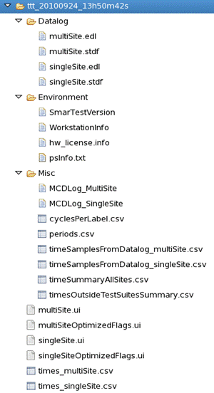

TTT tool
The TTT tool is a command line tool that automates test time measurement. The automation ensures that the results are reproducible and comparable.
The tool is located in the /opt/hp93000/soc/.service/bin directory.
Syntax
ttt [parameter option_1] [parameter option_2] [parameter option_x] [parameter option_n]
Parameter |
Explanation |
|---|---|
--additionalOptimizedFlags, -a |
If this flag is set, test time will be in addition be measured with optimized system and testflow flags. With this optimization, all flags are set to 0 except parallel_mode. |
--addWaitTimeBetweenFlowExecutions <waitTimeBetweenFlowIn_ms> |
This parameter adds wait time before starting the next testflow execution to allow for device cool-down. |
--collectCyclesPerLabel, -c |
If this flag is set, the number of cycles generated by any pattern in the vector setup will be calculated and reported in the file cyclePerLabel.csv. |
--collectMCDLog, -m |
If this flag is set, an MCDLog will be created and copied to the log directory for two single site and two multi-site testflow runs. |
--collectPeriods, -t |
If this flag is set, the periods of all timing sets in the timing setup file will be collected in the file periods.csv. |
--help, -h |
If this flag is set, the TTT tool displays usage information and exits. |
--ignore_rest, -- |
This flag inactivates all parameters that follow it. |
--loadTestProgram <test_program>, -l <test_program> |
This parameter specifies the test program that is to be loaded before the test time measurements are started. |
--noEDL |
If this flag is set, the event data log file will not be copied to the log directory. |
--numberOfDummyRuns <integer> |
This parameter specifies the number of initial testflow executions that will not be included in the test time measurement. 0 is allowed. The default is 1. The total number of executions is numberOfDummyRuns + numberOfRuns. By default, this is 21. |
--numberOfRuns <integer>, -n <integer> |
By default, the testflow is executed 20 times for test time measurements. This number does not include the first execution of the testflow (and eventual further dummy runs), which usually takes much longer than the following runs. |
--outdir <output_directory>, -o <output_directory> |
By default, the TTT tool uses the report subdirectory of the current device as its output directory. With this parameter, you can select another output directory. |
--password <password>, -p <password> |
This parameter specifies the password to be used for returning to Engineering mode. The default is "engineer". |
--pause |
When this option is selected, the TTT tool pauses before each testflow execution to allow switching the device in the socket. |
--selectSiteForSingleSite <site_number> |
By default, site 1 is used to measure the single site test time. With this parameter, you can select another site. This parameter is ignored if --skipSingleSite is also specified. |
--selectSitesForMultiSite <site_string> |
By default, all sites are enabled in order to measure multi-site test time. With this parameter you can restrict the number of site to be taken into account. For example if you specify --selectSitesForMultiSite 1001 then only site 1 and 4 will be enabled. This parameter is ignored if --skipMultiSite is also specified. |
--skipEclipseRestart |
With this option, the TTT tool stays in supervising mode after the test times are measured. This is mainly needed for scripting purposes so the TTT can be run multiple times in succession without restarting Eclipse between the different runs. |
--skipEclipseShutdown, -e |
By default, the TTT tool switches to Supervisor mode before it starts test time measurement. If this flag is set test times will be measured in Engineering mode. |
--skipFormatter |
By default, the report formatter .default.PROD is used. If you specify this flag, the formatter is not changed. |
--skipMultiSite |
If this flag is set, multi-site test time will not be measured. The --selectSitesForMultiSite parameter will be ignored. |
--skipSingleSite |
If this flag is set, single site test time will not be measured. The --selectSiteForSingleSite parameter will be ignored. |
--skipTestTimes, -s |
This flag suppresses collection of test times. It is equivalent to --skipMultiSite and --skipSingleSite combined. |
--stdf |
If this flag is set, STDF files will be copied to the log directory. |
--switchOnCallgrind, -v |
This flag switches on Callgrind measurement after preliminary executions. |
--tag <string> |
This parameter specifies a string that is appended to the automatically generated name of the log directory. The format of this name is
For example, if you specify --tag example the directory name will end with example. |
--version |
If this flag is set, the TTT tool displays version information and exits. |
All parameters are optional. If they are all omitted, the TTT tool switches from engineering to supervisor mode (which includes closing Eclipse) and then measures the test time for site 1 (single site) and also for all configured sites (multi-site). In both cases, the test flow is executed 20 times. Actually, it is executed 21 times, but the first execution, which usually takes much longer than the following runs, is excluded from the results. The TTT tool switches to the report formatter .default.PROD and creates all output files marked with an asterisk in the following section in a log directory within the report subdirectory of the current device.
Prerequisites for running the TTT tool
Before you can run the TTT tool, you must perform the following steps:
- Restart the system controller to get rid of unnecessary processes (optional).
- Start the required version of SmarTest.
- Set up the environment (for example, load testflow(s), dock loadboard).
- Optimize all testflows for which test times are to be measured.
- Make sure that the optimized testflows pass consistently on all sites.
- Save the optimized testflows as test programs.
Output files
The TTT tool writes all its output files into a dedicated subdirectory of the directory specified with the --outdir parameter. If --outdir is omitted, the report subdirectory of the current device is used.

The following table supplies some information on the output files:
File |
Explanation |
|---|---|
cyclePerLabel.csv |
This file is only generated if the --collectCyclesPerLabel flag is set. |
hw_license.info* |
This file contains information on the hardware and licensed options while the test program was run. The content of this file is also displayed in the report window when SmarTest is started. |
MCDLog_MultiSite |
This file is only stored in the output directory if the --collectMCDLog flag is set. |
MCDLog_SingleSite |
This file is only stored in the output directory if the --collectMCDLog flag is set. |
multiSite.edl* |
This is the event data log file for the multi-site measurement. It is not stored in the output directory if the --skipMultiSite or --noEDL flag is set. |
multiSite.stdf |
This file is only stored in the output directory if the --stdf flag is set. |
multiSite.ui* |
This file contains the debug3 output for the multi-site measurement. |
multiSiteOptimizedFlags.ui |
This file contains the debug3 output for the multi-site measurement with optimized flags. It is only generated if the --additionalOptimizedFlags flag is set. |
periods.csv |
This file is only generated if the --collectPeriods flag is set. |
psinfo.txt* |
This file supplies information about processes running at the start of test time measurements. |
singleSite.edl* |
This is the event data log file for the single site measurement. It is not stored in the output directory if the --skipSingleSite or --noEDL flag is set. |
single.site.stdf |
This file is only stored in the output directory if the --stdf flag is set. |
singleSite.ui* |
This file contains the debug3 output for the single site measurement. |
singleSiteOptimizedFlags.ui |
This file contains the debug3 output for the single site measurement with optimized flags. It is only generated if the --additionalOptimizedFlags flag is set. |
SmarTestVersion* |
This file reports the SmarTest version on which the test program was executed. |
times_multiSite.csv |
This csv file is extracted from the event data log file. It provides statistical information about the times of every test suite for the multi-site measurements. It is only generated if the --noEDL flag is not set. |
times_singleSite.csv |
This csv file is extracted from the event data log file. It provides statistical information about the times of every test suite for the single site measurements. It is only generated if the --noEDL flag is not set. |
timesOutsidesTestSuitesSummary.csv* |
This file reports the time spans that were used up by the testflow outside the test suites. |
timeSampleFromDatalog_multiSite.csv* |
This file is extracted from the event data log file. It contains the testflow times and the times of every test suite for all multi-site testflow runs, including the dummy runs. It is only generated if the --noEDL flag is not set. |
timeSampleFromDatalog_singleSite.csv* |
This csv file is extracted from the event data log file. It contains the testflow times and the times of every test suite for all single site testflow runs, including the dummy runs. It is only generated if the --noEDL flag is not set. |
timeSummaryAllSites.csv* |
This file combines times_multiSite.csv and times_singleSite.csv. It is only generated if the --noEDL flag is not set. |
WorkStationInfo* |
This file contains information about the system controller on which the test program was run. It includes, for example, information about the processor, memory, and the operating system. |
The files marked with an asterisk are generated by default.
Functional changes
- Introduced in SmarTest 6.5.4
- SmarTest 7.1.2: Parameter --pause introduced
- SmarTest 7.1.3: Parameter --addWaitTimeBetweenFlowExecutions introduced
- SmarTest 7.1.3: Parameter --skipEclipseRestart introduced